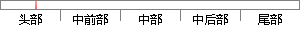

魏晋中“魏”指的是三国北方政权曹魏，而“晋”指的是司马氏建立的晋朝， 此时北方正是五胡十六国时期。
片段位置图

相似结果|
1
原句片段：魏晋中“魏”指的是三国北方政权曹魏，而“晋”指的是司马氏建立的晋朝， 此时北方正是五胡十六国时期。
相似片段 1：魏晋中“魏”指的是三国北方政权曹魏,而“晋”指的是司马氏建立的晋朝, 此时北方正是五胡十六国时期。 魏晋时期,国家政权更替频繁,思想自由开放。文化上得到了巨大...
|
※ 片段修改建议 ※
近似词参考：- 建立：成立 创立 创设 建树 确立 设立建设 竖立 创建 树立
- 方正：朴直
- 正是：恰是
- 时期：期间 时代
系统自动生成语句：魏晋中“魏”指的是三国北方政权曹魏，而“晋”指的是司马氏成立的晋朝， 此时北朴直是五胡十六国期间。
注：本片段修改建议为系统自动生成，仅供参考。